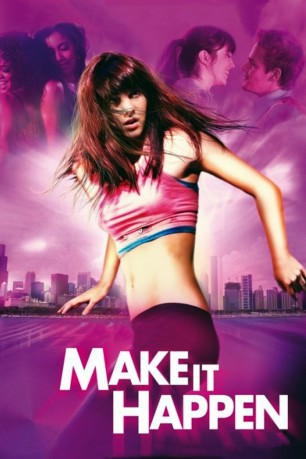

#8293 Make It Happen - Lebe deinen Traum
 
 IMDB-Wertung: 5.5 / 10
IMDB-Wertung: 5.5 / 10  Metascore: 0
Metascore: 0 
Lauryn aus Indiana träumt von einer Ausbildung an der renommierten Tanzakademie von Chicago, doch trotz aller Ambition und guter Vorbereitung verläuft das Vortanzen alles andere als erfolgreich. Frustriert und ohne rechte Lust, als Verliererin in die Provinz zurück zu kehren, heuert Lauryn in einem Tanzclub an, wo sie sich zur Überraschung der Managerin als Talent für Choreografie und Publikumsmagnet entpuppt. Als ihr überprotektiver Bruder mal in die Stadt kommt, ist er von dieser Entwicklung (und ihrem neuen Freund) wenig begeistert.
Jahr: 2008
Dauer: 90 Minuten
FSK: 0
Land: USA Studio: The Weinstein CompanyTonspuren: DTS - ,
Untertitel: Deutsch,
Auflösung: 1080p (1920x800) Größe: 7864 MB
Genre: Drama
Regisseur: Darren Grant
Drehbuch: Duane Adler
Soundtrack: Paul Haslinger
Darsteller:
 Mary Elizabeth Winstead als Lauryn
Mary Elizabeth Winstead als Lauryn Tessa Thompson als Dana
Tessa Thompson als Dana Riley Smith als Russ
Riley Smith als Russ John Reardon als Joel
John Reardon als Joel- Julissa Bermudez als Carmen
- Ashley Roberts als Brooke
- Karen LeBlanc als Brenda
- Aaron Merke als Clay - Mechanic
- Leigh Enns als Flirtatious Customer
- Kyle Nobess als Doorman Charlie - Ruby's
- Terry Ray als Birthday Party Guy
- Michael Xavier als Marcus
- Sara Thompson als Young Lauryn
 Ernie Pitts als Bouncer at Malcolm's
Ernie Pitts als Bouncer at Malcolm's Dan Skene als Ruby Stage Bartender
Dan Skene als Ruby Stage Bartender- Duncan Tran als Street Dancer
- Matt Kippen als Wayne
- Erik Fjeldsted als Marty - Mechanic
- Christina Grace als Female Dancer - Auditions
- Debbie Patterson als Audition Receptionist
- Sofia Costantini als Choreographer's Assistant
- Jeremy Koz als Cool Looking Guy
- Gordon Tanner als David Lancer - Choreographer
- Alexandra Herzog als Snotty Girl
- Tara Birtwhistle als Lauryn's Mom
- Nigel Holt als Street Dancer
- Tyrell Witherspoon als Audition Dancer
- Rylan Mayberry als Boy in Suit (uncredited)
Datei: X:\2008(G-M)\Make It Happen - Lebe deinen Traum (2008, FSK0, 1920x800).mkv seit 20.02.2018
Festplatte: HD 2008(G-Z)-2009(A-F)
 Es gibt insgesamt 73 Filme in der Gruppe '2008(G-M)'
Es gibt insgesamt 73 Filme in der Gruppe '2008(G-M)'